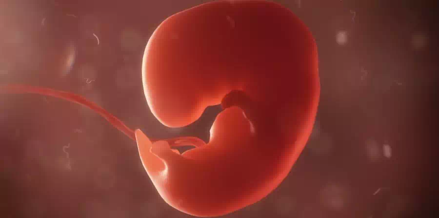

Aborto con pastillas: respuesta a 6 preguntas que pueden surgir antes de abortar
-
addContenido
Los abortos por embarazos no deseados se han hecho bastante comunes, mayormente en mujeres jóvenes quienes tras verse en esta situación piensan inmediatamente en dicho método. La interrupción del embarazo es un tema que ha causado mucha polémica en los últimos años y se han creado muchos mitos a su alrededor. Esto ha causado confusión y temor en las mujeres que desean practicarlo.
¿El aborto con pastillas puede causar esterilidad?
Mientras lo practiques de la forma adecuada. Ya sea inducido clínicamente o con pastillas en tu hogar (siguiendo las indicaciones y dosis), no supondrá ningún daño en tu salud. Podrás volver a embarazarte cuando tú lo desees.
¿Es capas el abortar pone en peligro la vida de la mujer?
Mientras se respete el tiempo adecuado para practicarlo y seguir las instrucciones al pie de la letra es ¡Falso! Preferiblemente se debe realizar dentro de las primeras semanas de gestación y no supondrá ningún riesgo para la salud de la mujer, de hecho, un parto puede llegar a ser más peligroso que el aborto.
¿Siente dolor el embrión?
El área cerebral que se encarga de responder al dolor no se desarrolla hasta después de la semana 24 de gestación y generalmente los abortos suelen realizarse antes de este tiempo. Para poder realizar un aborto con Cytotec de manera segura, se debe hacer antes de la semana 12 de embarazo.
¿Se siente remordimiento luego de haber abortado?
Tras muchas investigaciones, expertos han demostrado que un 95% de las mujeres que practican un aborto, no se arrepienten aún pasados hasta tres años después del procedimiento, al contrario; todas experimentan un sentimiento de alivio.
¿Ocasiona cáncer de mama por haber abortado?
![Se han efectuado estudios para determinar si existe una asociación entre el riesgo de cáncer de mama y el aborto inducido. La mayor parte de ellos han sido estudios epidemiológicos de cohortes históricas o de casos y testigos, estos últimos basados en entrevistas sujetas a la fuerte influencia de sesgos de recordación. Los casos (es decir, las mujeres con cáncer de mama) suelen ser más propensos a proporcionar información fidedigna sobre el número de abortos inducidos porque tienen un interés personal en aportar datos para fines de la investigación; en cambio, los testigos, que casi siempre son mujeres sanas, no proporcionan esa información tan desinhibidamente. Ello podría conducir a una falsa elevación del riesgo calculado entre el cáncer de mama y el aborto inducido, aunque hasta ahora los resultados de los estudios de casos y testigos han sido muy poco congruentes.](../img/pastilla-abortiva/pregunta/cytotec-cancer-de-senos.webp)
Estudios revelan que hasta el momento no existe un vínculo entre el aborto y el cáncer de mama. La American Cancer Society afirma que puede haber un riesgo de cáncer durante un periodo muy corto luego de dar a luz, y aseguran que no hay evidencia que respalde la idea de que un aborto puede aumentar el riesgo de cáncer mamario.
¿Tiene Consecuencias psicológicas?
![Si ha sido un embarazo deseado (es decir, se ha buscado activamente o no se ha buscado, pero se ha aceptado con ilusión después), es necesario poder entender el aborto como un duelo. Es un proyecto truncado. En muchas ocasiones, desde el punto de vista social no se reconoce la pérdida puesto que el feto no se ha llegado a formar y a nacer. Es importante visibilizar este hecho y poder abordarlo en toda su profundidad. Es esperable que los síntomas sean más graves cuanto más avanzada esté la gestación](../img/pastilla-abortiva/pregunta/cytotec-trauma-psicologico.webp)
Todo lo contrario, puede haber un daño si la mujer avanza con un embarazo que no desea, afectando su salud mental y calidad de vida. En cambio, si ella decide voluntariamente optar por la interrupción del embarazo y se realiza exitosamente no tiene porqué causar ningún daño psicológico.
La única manera de que se desarrolle un daño a nivel psicológico tras un aborto es que este no se haya practicado voluntariamente, ya sea porque la mujer fue obligada a practicarlo o que haya sido un aborto espontáneo.